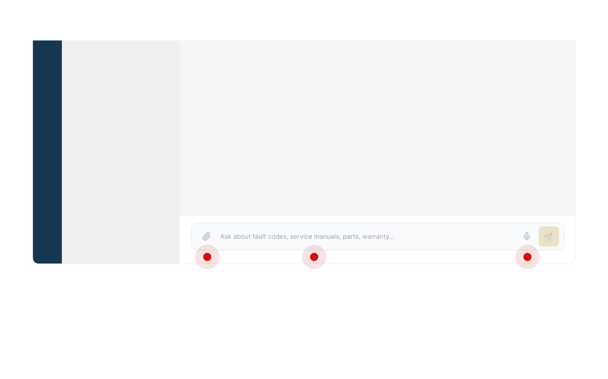
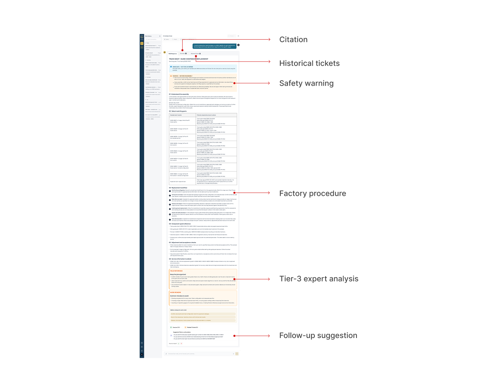
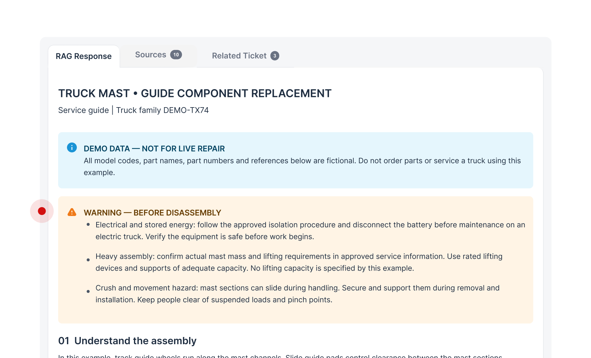
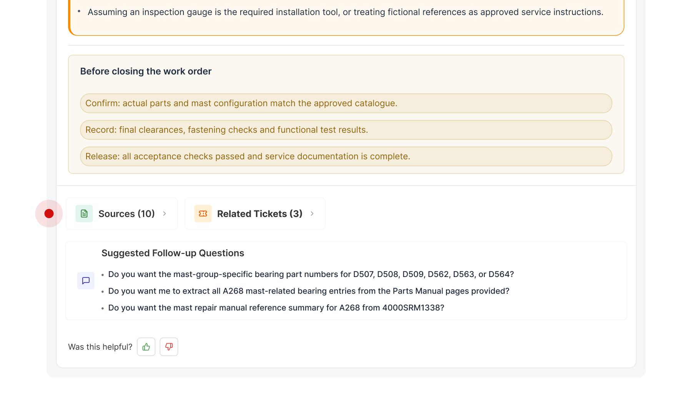
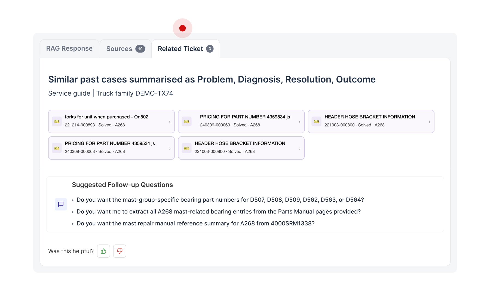
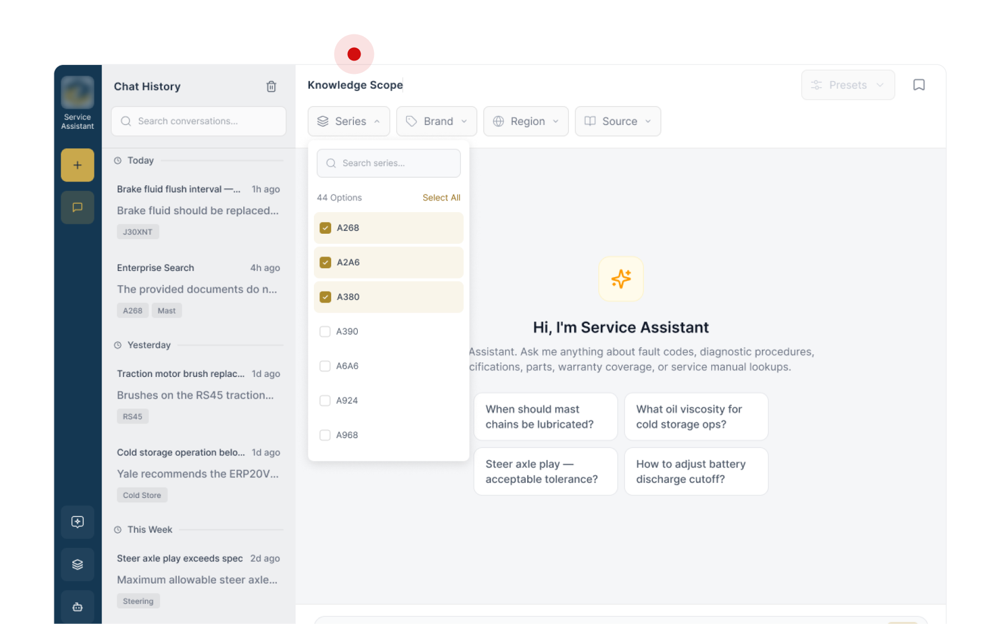
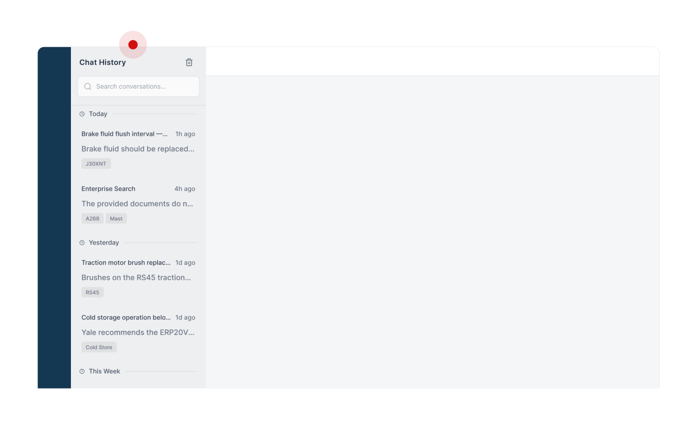

Service Assistant: An AI Tool for Lift-Truck Field Engineers
We designed Service Assistant, an AI tool that gives service engineers cited answers from thousands of pages of manuals in seconds.
Role
Product / UX Designer
Client
Global lift-truck manufacturer
Technologies
React, Enterprise AI Solutions
Platform
Web - Phone, Tablet and Desktop
Users
The Challenge
The Challenge
The client builds the lift trucks that move loads in warehouses, factories and ports, sold under two well-known brands. Its dealer network services a wide range of series and models across the Americas and the rest of the world, and every truck comes with its own service manuals, repair procedures and parts specifications.
Service Assistant lets a technician describe a fault in plain English, the way they would explain it to a senior colleague. It searches the indexed manuals and past repair tickets, then returns a structured answer with the exact source page attached. The knowledge engineers needed already existed, but it was buried.
Too many manuals, too little signal
Each series and model has its own documentation, split further by brand and region. A keyword search returns dozens of near-matches, and the engineer has to decide which one applies.
Slow paths to an answer
The fallback was paging through binders and PDFs or waiting on a helpdesk callback, while a truck sits idle at a customer site.
Hard-won knowledge stayed in people's heads
How a similar fault was fixed last time lived in old tickets and in senior technicians' experience, not in anything a newer engineer could search.
Trust and safety
A wrong torque value or a skipped battery disconnect can injure someone. Any AI answer had to be verifiable against the factory manual, and safety notices could never be buried.
Real working conditions
Engineers work on the shop floor or in a port yard, often on a phone, sometimes with dirty or full hands. The interface had to work in that context, not just at a desk.
Users new to AI tools
The audience had no prior experience with an assistant like this, so the experience had to be self-explanatory with no training beyond a short guide.
The Solution
The Solution
We built a conversational assistant that answers like an experienced senior technician but shows its sources like a manual. The design rested on four principles.
Ask in your own words
Engineers type, or speak, a full description of the symptom and the truck's series number. Service Assistant remembers that truck for the rest of the session, so follow-ups need no repeated context.
Every answer has the same shape
Safety warnings first, then the verbatim factory procedure, then an expert Tier-3 style analysis, then citations, then matching historical tickets. Engineers learn where to look once and never hunt again.
Show the source, always
Each answer lists the exact manual pages it came from and which brand, region or collection it was scoped to. The engineer can open the page and check before touching the truck.
Narrow the search when needed
A Knowledge Scope panel lets engineers filter by series, model, brand, region and source, and save combinations as presets. Left alone, Service Assistant searches everything.
Behind the scenes, quality checks validate procedures against the source manual and flag answers that are not grounded in an indexed document, before anything reaches the engineer.
Key Components
Key Components
The interface is built from seven parts, each mapped to a specific problem engineers had.
Conversational input
Text field with photo/file attach and voice input; series number carried through the session.
Keyword searches often missed the actual symptom, so engineers had to guess the right terms. Engineers can now describe the problem as they would to a colleague. Voice and photo input help when their hands are busy or dirty on the shop floor.

Structured answer
Fixed order: safety warning, factory procedure, Tier-3 expert analysis, citations, historical tickets.
Long, unstructured answers made engineers hunt for the part they needed. Every response now follows the same order, so they know exactly where to look. This saves time and builds familiarity with every use.

Safety-first banner
Fluid pressure, high-temperature and battery-disconnect warnings always shown before any steps.
Under time pressure, safety notes buried in a manual were easy to skip. Showing warnings first, before any repair steps, means they are always seen. This lowers the risk of injury or equipment damage.

Citations and scoped sources
Exact manual page numbers plus the brand, region or collection the answer came from.
Engineers had no easy way to check whether an AI answer was correct. Each answer now points to the exact manual page it came from. They can verify it in seconds, which builds trust in the tool.

Historical tickets (PDRO)
Similar past cases summarised as Problem, Diagnosis, Resolution, Outcome.
Knowledge of how past faults were fixed lived in old tickets or in senior technicians' heads. Short summaries of similar past cases make that experience available to everyone. Newer engineers can learn from proven fixes instead of starting from scratch.

Knowledge Scope filters
Series, model, brand, region and source filters, with saveable presets.
With so many truck series and models, searches often returned results for the wrong machine. Filters narrow the search to the exact truck, brand or region. Saved presets mean engineers set this up once and reuse it.

Chat history
Searchable past sessions grouped by date, reopened where they left off; New Chat resets truck context.
Engineers lost track of past troubleshooting when moving between jobs. Saved, searchable history lets them pick up right where they left off. Starting a new chat clears the old truck details, so they don't mix into the next job.

Outcome
Outcome
Service Assistant turned a search through binders and helpdesk queues into a single conversation with a cited answer. Engineers now get the right procedure for the right truck in seconds, and can check the manual page before they act.
Faster diagnosis
Answers that used to take paging through manuals or waiting on a callback now arrive in seconds, inside the same chat where the engineer can refine the question.
Answers engineers can trust
Every response cites its source page and scope, and procedures are checked against the manual before display, so the AI supports judgement instead of replacing it.
Safety built into the flow
Warnings are always the first thing an engineer sees, never an afterthought at the end of a procedure.
Shared field knowledge
PDRO ticket summaries give newer technicians access to how experienced colleagues solved the same fault.
Zero-install adoption
A browser link, no app and no separate login, so dealers across both regions could start using it on day one.
Impact metrics
The service assistant improves procedure lookup speed, reduces time spent searching documentation, increases first-time fix rates, lowers Tier-3 escalations and ensures every answer includes a verifiable manual citation.
| Metric | Industry baseline | With Service Assistant |
|---|---|---|
| Time to find the right procedure | 10–20 min per lookup | Under 2 min, including source check |
| Share of troubleshooting time spent searching docs | ~30% | ~15% |
| First-time fix rate | ~75% dealer-network average | 82–85% |
| Escalations to helpdesk / Tier-3 | Current volume | 20–30% fewer |
| Answers with a verifiable manual citation | Engineer cross-checks manually | 100%, by design |
Sources: Service Council / Aberdeen via ServiceMax · Dealer FTFR benchmark · McKinsey via IFMA · Fluid Topics · Lookup time, AI vs manual · Brynjolfsson, Li & Raymond, Generative AI at Work (NBER)